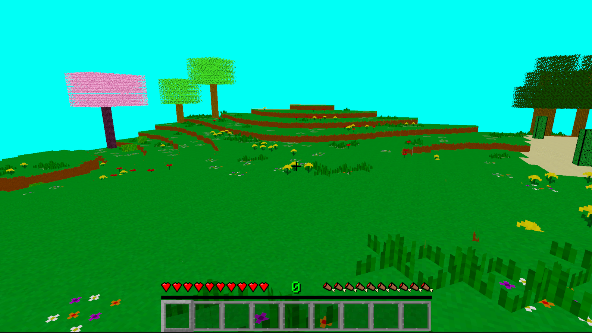
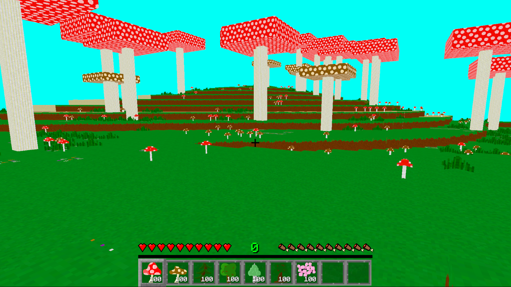
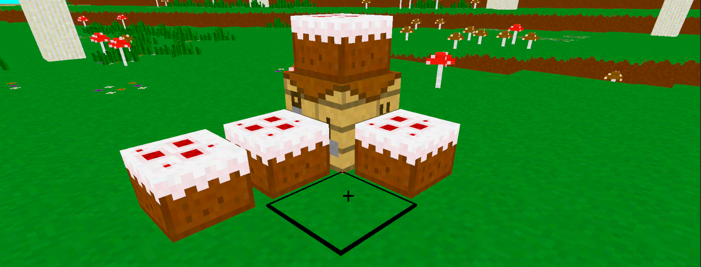
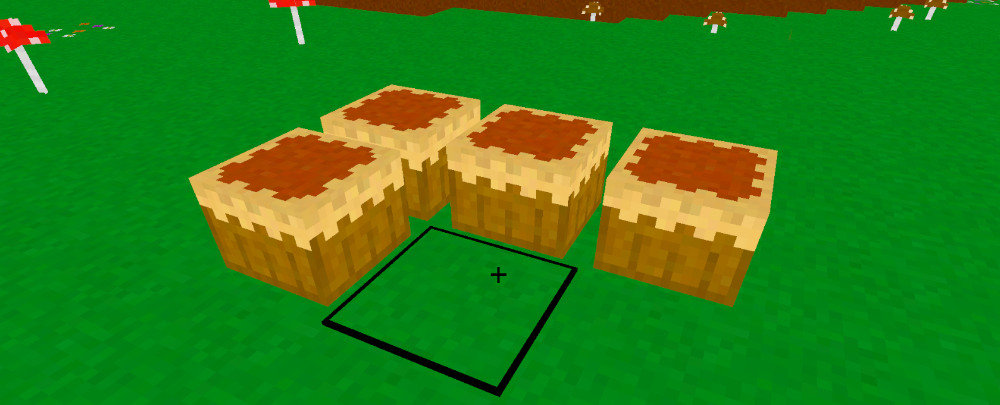
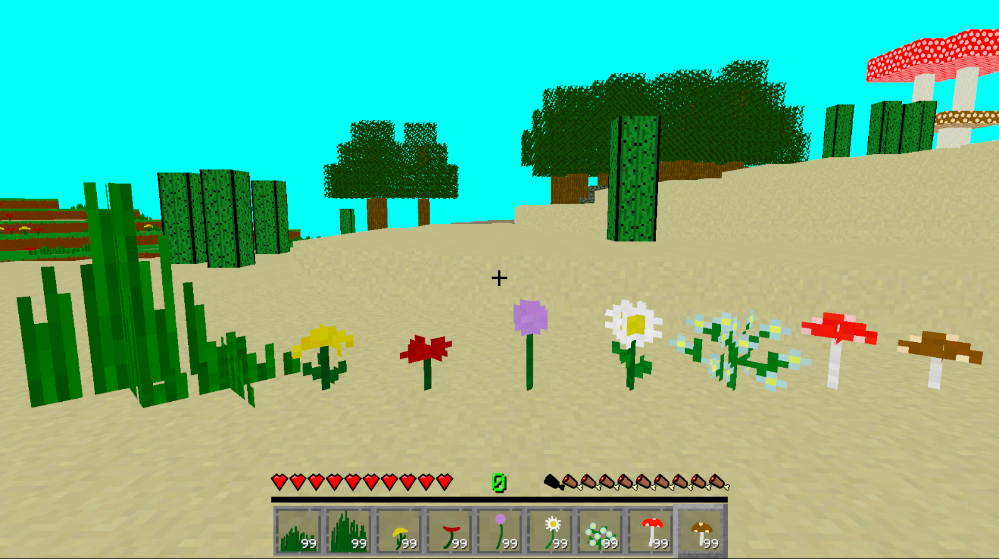
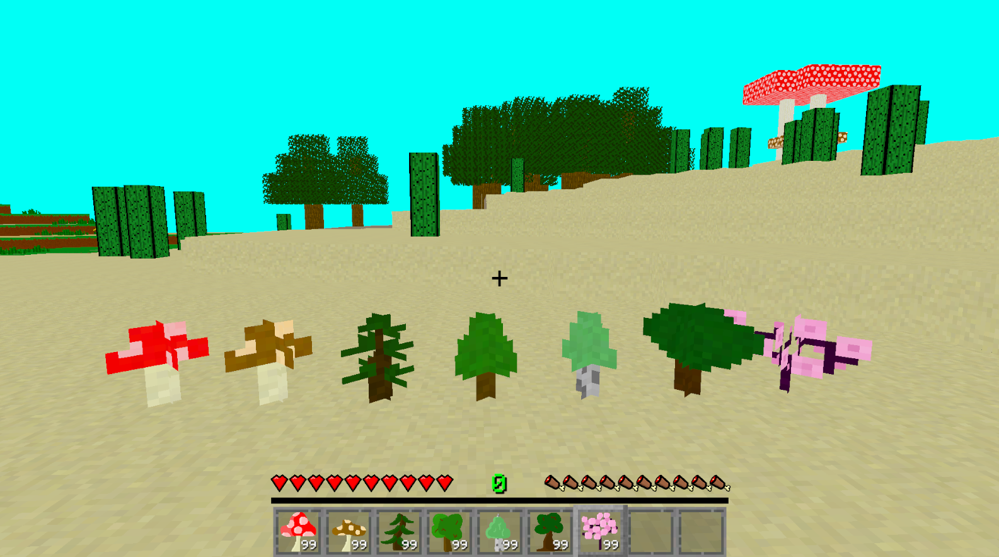

Devlog Twelve Overview
Some of the stuff in this update I was going to save for other updates centered around a theme, but I just want to add them now. I got some ideas recently about how I might go about doing some stuff, so I just have to add them now. They'll really make the game just better in every way. So enjoy this group of random but awesome stuff I threw together.
Main Features
First feature of this update is that tools and blocks now all have different mining speeds related to them. So no longer will everything be mined at exactly the same speed. Blocks have their own mine speed, and tools have a speed they can mine at. The video below just shows me mining dirt, but I'm sure you can get the idea for other slower to mine blocks as well like Obsidian.
For the next addition, I added it where the player can no longer sprint when their hunger is low. Their speed is halved when their hunger reaches three or below. Max is 10. I was gonna show a video of this, but I don't want to go through the effort. Just believe me when I say they run slower.
I might be in love with this next awesome thing I added. I'm calling it X-Shaped plants. Basically I thought of a lazy way to make grass and other simple plants. You just take a cube, and move some of the faces around to make an X shape, and that gives something pretty good for plants and grass. Here is some quick pictures, but there will be a lot more down in the block section of this page.



Related to the above addition, saplings now have a physical form. They've been in the game for a while now, but they haven't had a proper physical form. I've just been using the leaf blocks from the trees as the saplings. You'll see more about the saplings down in the block section of the page.
I really enjoy this next feature as just something fun to play with. I made it where food can now have side effects. And of course, the first item I gave an effect to was the DurDur Fruit. It can now randomly teleport the player within a 15 block radius. It's just fun to play with honestly. And now that this system is in place, I'm gonna think up some other fun effects for future updates.
This is another addition that I just love so, so much. I now have cake in the game, and they're a little adorable. Along with cake, I also have placeable Pumpkin Pie. You can't eat either of them, but you can place them. So good enough for me. Cake in Minecraft is really more of a decoration anyways. Let's be honest.


Blocks
Ok, the first set of blocks I need to talk about is what I'm calling the X-Shaped plants. It's plants that have their block faces set to look like an X. I think Minecraft has quite a bit of it's plants set up like this as well. It's making the game look a lot better in my opinion. The ground doesn't look as flat, and the world feels like it has a touch of life.

Now here are the sapling blocks I made. I don't know how I like some of them, but good enough for me. At least for now.

Now I didn't add any full blocks in this update, which is rare for me. But I feel like with all the new plants I added, which make the world feel more alive, and just better, I still did good.
Conclusion
There really is just so much to do, but with every update like this one, the game just starts to feel a lot more complete. The game really is ready for people to start testing it, and getting them to find the areas where I need to work on the most. Like I know the character controller still isn't great. So, that's something I really need to work on. But what else?
While working on this devlog update, there was some things I was going to add, but I wanted to save them for another devlog update. Keep some things grouped together if I can and have the motivation to do so. Which brings me to the topic of the next devlog. I'm not going to say what it is. But I can tell you that I don't think it's going to be a bunch of random additions like this devlog and the last were. I really want it centered around a theme.